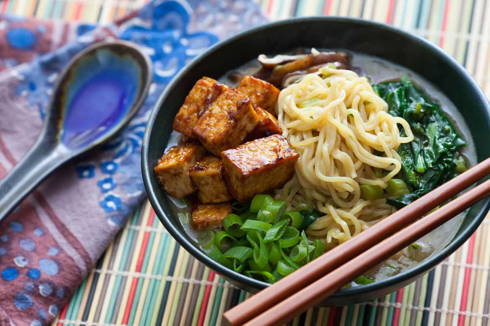

School of Business
Andrew Glantz and Jacob Mohrmann started FoodShare, a startup that donates a meal to a person in need through Operation Food Search for every meal a user orders through the app. http://www.bizjournals.com/stlouis/blog/biznext/2015/10/startup-brings-buy-one-give-one-model-to-st-louis.html
Blake Marggraff (CEO), Avik Som (CMO), Evan Huang (CTO), and Joe McDonald (COO and CFO) started Epharmix, a health technology startup that creates condition-specific digital interventions for medical care. They raised $765,000 from a group of five investors. http://www.bizjournals.com/stlouis/blog/biznext/2015/07/biogenerator-among-investors-in-health-technology.html?ana=twt

Shio ramen is probably the oldest of the four and is a pale, clear, yellowish broth made with plenty of salt and any combination of chicken, vegetables, fish, and seaweed. Occasionally pork bones are also used, but they are not boiled as long as they are for tonkotsu ramen, so the soup remains light and clear.

Tonkotsu ramen usually has a cloudy white colored broth. It is similar to the Chinese baitang and has a thick broth made from boiling pork bones, fat, and collagen over high heat for many hours, which suffuses the broth with a hearty pork flavor and a creamy consistency that rivals milk, melted butter or gravy (depending on the shop). Most shops, but not all, blend this pork broth with a small amount of chicken and vegetable stock and/or soy sauce.

Shoyu ramen typically has a clear brown broth, based on a chicken and vegetable (or sometimes fish or beef) stock with plenty of soy sauce added resulting in a soup that is tangy, salty, and savory yet still fairly light on the palate. Shoyu ramen usually has curly noodles rather than straight ones, but this is not always the case.

Miso ramen is a relative newcomer, having reached national prominence around 1965. This uniquely Japanese ramen, which was developed in Hokkaido, features a broth that combines copious amounts of miso and is blended with oily chicken or fish broth and sometimes with tonkotsu or lard – to create a thick, nutty, slightly sweet and very hearty soup. Miso ramen broth tends to have a robust, tangy flavor.